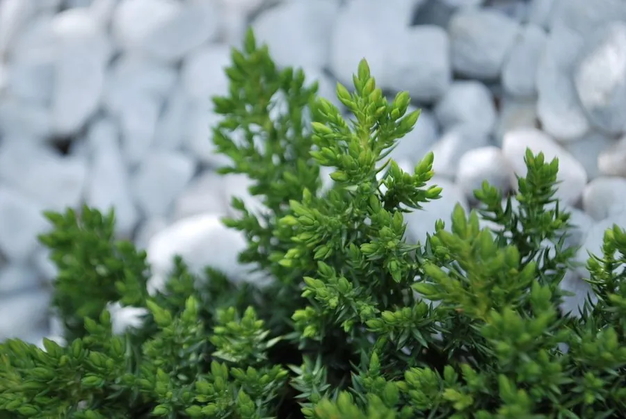

蕨类与裸子植物 · 植物界
铺地柏 Juniperus procumbens

铺地柏是匍匐生长的柏类植物，枝条贴地蔓延、四季常绿，是护坡绿化和盆景中常见的优良矮生针叶植物。
- 分类
- 门裸子植物门纲松纲目松柏目科柏科属刺柏属
- 栖息环境
- 阳光充足、排水良好的坡地与岩石园，耐旱耐寒
- 地理分布
- 原产日本，现中国各地广泛栽培
- 保护级别
- 暂无评估（园艺栽培树种）
物种志
铺地柏是柏科常绿匍匐灌木，高 0.3–0.8 m，枝条平铺地面、向外伸展，长可达数米。叶三叶轮生，线状披针形，先端较尖，叶面有白色气孔带。球果浆果状，近球形，成熟时蓝黑色，有白粉。整株低矮、贴地生长，姿态舒展。
铺地柏原产日本，中国各地广泛引种栽培，喜光照充足、排水良好的环境，耐旱、耐寒、耐修剪，对土壤要求不严。它枝条贴地蔓延，能较快覆盖地面，是护坡、堤岸和岩石园的优良绿化植物；也常被制作成悬崖式、临水式盆景。铺地柏四季常绿、养护简单，在城市绿化和庭院中应用广泛。栽培时应避免土壤积水，否则容易烂根，影响生长和观赏效果。
形态与习性
- 株高0.3–0.8 m，匍匐生长
- 枝平铺地面，可长达数米
- 叶三叶轮生，线状披针形
- 球果浆果状，成熟时蓝黑色
- 用途护坡绿化与盆景
趣味知识
- 铺地柏的枝条贴着地面蔓延，像一张绿色的地毯。
- 它耐旱耐寒、耐修剪，是护坡绿化的好材料。
- 盆景中常用铺地柏制作悬崖式造型。